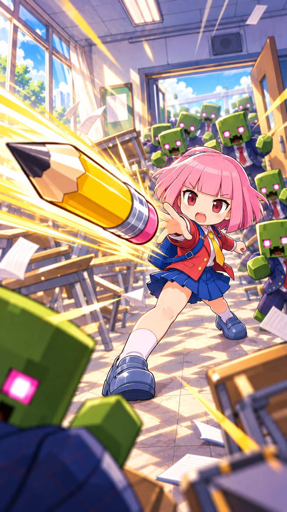

0. 이 가이드의 읽는 법
기준은 Developer/r3f_prototype/src와 Planner/ 문서에서 확인한 현재 로컬 소스다. Firebase 원격 관리자 튜닝, 실제 배포 빌드, Google 로그인, Realtime Database 쓰기, 모바일 실기기 플레이는 이번 문서 작업에서 검증하지 않았다.
Planner/current_game_rules.md에는 Stage 1 보스 192초, 포탈 240초, 무기 슬롯 8개 같은 값이 남아 있다. 현재 코드/가이드 정본은 Stage 1 보스 150초, 포탈/마틸다 210초, 스테이지 지속 240초, 런 무기 보유 상한 10개다.핵심 숫자
4개 스테이지
20종 무기 카탈로그
8개 NPC fetch/return/install 퀘스트
10개 런 중 무기 보유 상한
30개 미션 카탈로그
1. 게임 정체성 / 대상 / 감정 톤
한 줄 설명
학생이 자동 공격 무기와 동료성 아이템을 성장시키며 몰려오는 좀비를 피하고, 정해진 시간 뒤 열리는 탈출 포탈로 빠져나가는 학교 테마 생존 액션이다.
따뜻한 친구 회복 콘셉트
“무섭게 도망만 치는 게임”이 아니라, 쓰러진 학생·친구·동료를 돕고 회복시키는 따뜻한 서사가 의도되어 있다. 단, 이 문장의 감정 톤은 내러티브 의도이며, 실제 효과는 퀘스트·동료 무기·회복/보상 코드가 지원하는 범위로 구분해야 한다.
타깃
짧은 세션을 선호하는 모바일 캐주얼 유저, 뱀서류 성장감을 좋아하지만 복잡한 조작을 싫어하는 유저, 귀엽고 과장된 학교 좀비 코미디를 받아들이는 유저.
차별점
연필, 30cm 자, 커터칼, 텀블러, 랜턴, 오니기리처럼 학교/생활 소품이 무기다. 치비코·하나코·이누콘 같은 동반자형 카드가 전투와 회복 감성을 보강한다.
세션 목표
생존 → 경험치 → 레벨업 카드 → 보스 압박 → 포탈 탈출 → 골드/해금/랭킹 확인이 한 판 안에 들어오는 반복 루프다.
2. 실제 플레이어 여정과 조작
모바일 기본 조작
VirtualJoystick.jsx가 모바일 이동을 담당한다. 공격은 무기가 주기적으로 자동 실행하므로, 초보자 안내는 “엄지로 도망가고, 레벨업 때 카드만 고르면 된다”가 가장 이해하기 쉽다.
키보드 보조 조작
keyboardInput.js는 W/A/S/D와 방향키를 이동으로 매핑한다. 창 포커스를 잃으면 눌림 상태를 리셋해 캐릭터가 자동 이동으로 고착되는 문제를 막는다.
실패와 성공
체력이 0이 되면 gameover, 탈출 조건을 만족하면 cleared 흐름으로 간다. store phase는 playing, paused, levelup, gameover, cleared다.
로그인 경계
ReadyGameApp.jsx의 주석/흐름상 스테이지 진입은 Google/Firebase progress hydration에 막히면 안 된다. 게스트 또는 클라우드 실패 세션은 인메모리 기본 진행으로 플레이하고, 클라우드 저장은 선택적 보강이다.
3. 런 루프 / 전투 / XP / 레벨업
기본 전투 루프
- 좀비가 명시 버스트 이벤트와 스테이지 이벤트로 등장한다.
- 무기가 자동 발사/회전/범위 공격/동료 행동을 한다.
- 처치와 생존이 XP, 골드, 기록에 기여한다.
- XP가 차면
levelup선택 상태로 들어간다. - 카드 4장 중 하나를 골라 새 무기 획득 또는 기존 무기 강화를 한다.
카드/보유 규칙
upgrades.js 기준 런 중 무기는 최대 10개, 무기 레벨은 내부 MAX_WEAPON_LEVEL = 5, 레벨업 선택지는 4장이다. 이미 가진 무기는 강화 카드로 계속 나올 수 있고, 10슬롯이 찬 상태에서도 계정 해금·최소 레벨 조건을 만족한 신규 획득 카드는 교체 후보로 표시될 수 있다. 실제 활성 무기 수는 교체 확정 시 기존 무기를 제거해 10개 상한을 유지한다.
기본값은 live 튜닝이 아니다
이 문서의 수치들은 코드 기본값이다. Firebase/admin tuning 또는 운영 배포 상태가 다를 수 있으므로, “현재 서비스가 반드시 이 값으로 실행 중”이라고 쓰지 않는다.
4. 스테이지 / 보스 / 포탈
| 스테이지 | 테마 | 시간/맵 | 보스/포탈 | 해금 | 생존 보상 마일스톤 |
|---|---|---|---|---|---|
| stage1 | 교실 생존 | 240초, halfX 10 / halfZ 14.4 | B01, 보스 이벤트 150초. 포탈/마틸다 210초. | 기본 | 48초 +1, 144초 +3, 192초 +4, 240초 +8 골드 |
| stage2 | 복도 투사체 시험 | 240초, halfX 7.5 / halfZ 19.2 | B02 | stage1Clears ≥ 1 | 48초 +2, 144초 +4, 192초 +5, 240초 +10 골드 |
| stage3 | 체육관 총력전 | 240초, halfX 7.5 / halfZ 19.2 | B03 | stage2Clears ≥ 1 | 48초 +3, 144초 +5, 192초 +7, 240초 +14 골드 |
| stage4 | 급식실 대탈출 | 240초, halfX 9.36 / halfZ 16 | B04 | stage3Clears ≥ 1 | 48초 +4, 144초 +6, 192초 +9, 240초 +18 골드 |
5. 무기 20종 전체 카탈로그
weaponCatalog.js가 단일 정본이다. starter 4종은 항상 기본 해금, 13종은 기록 조건 계정 해금, 3종은 런 중 조합 발견이다.
| ID | 이름 | 기능/역할 | 해금/등장 | 핵심 기본값 |
|---|---|---|---|---|
| pencilThrow | 연필 | 기본 원거리 투사체 | starter, Lv1, startsActive | damage 2.4, cooldown 550ms, count 1, pierce 1, range 2.25 units(0.5625블록) |
| schoolBag | 30cm 자 | 근접 휘두르기 방어 | starter, Lv2 | damage 12, cooldown 1300ms, range 0.633 units(0.158블록), trigger 1 unit(0.25블록) |
| boxCutter | 커터칼 | 짧은 사거리 고치명 근접 | starter, Lv2 | damage 7.2, cooldown 1625ms, range 1.4 units(0.35블록), crit 33% |
| tumbler | 텀블러 | 주변 회전 지속 피해 | starter, Lv2 | damage 6, radius 1 unit(0.25블록), 2.5 hits/s, count 1 |
| scienceFlask | 과학 플라스크 | 착탄 폭발 + 화학 웅덩이 존 | totalRuns 2, Lv4 | damage 7.5, cooldown 8400ms, zoneRadius 1.4 units(0.35블록), duration 5000ms |
| bell | 벨 | 8방향 충격파 | stage1Clears 1, Lv4 | damage 10, cooldown 3200ms, directions 8, radius 1.7 units(0.425블록) |
| stunGun | 전기 | 체인 공격 | stage2Clears 1, Lv6 | damage 18, cooldown 3000ms, chainCount 2 |
| onigiri | 오니기리 | 튕기는 고피해 투사체 | totalKills 700, Lv6 | damage 52.5, cooldown 5000ms, bounces 6, bounceRange 4.5 units(1.125블록) |
| chibiko | 치비코 | 동료형 단일 투사체 지원 | totalRuns 3, Lv8 | damage 1.25, cooldown 1100ms, range 22 units(5.5블록), followDistance 0.72 |
| hanako | 하나코 | 동료형 회복 | 런 중 조합 발견 | healInterval 20000ms, healPercent 5%, followDistance 1.44 |
| inucon | 이누콘 | 회복 + 밀어내기 접촉 펄스 | bossKills 3, Lv8 | healInterval 2000ms, healPercent 2%, pushRadius 0.85 units(0.2125블록) |
| guidedMissile | 보조배터리 미사일 | 범위 폭발 미사일 | bossKills 1, Lv4 | damage 8, cooldown 6000ms, range 7.34 units(1.835블록), radius 1.6 units(0.4블록) |
| sharkMissile | 상어미사일 | 귀소/재타겟 폭발 미사일 | stage2Clears 1, Lv8 | damage 20.8, cooldown 4200ms, range 28 units(7블록), radius 1.8 units(0.45블록) |
| starlink | 고장난 스타링크 | 근처 낙뢰형 범위 타격 | totalKills 2500, Lv8 | damage 28, cooldown 6500ms, strikeCenter 5 units(1.25블록), radius 1.2 units(0.3블록) |
| compassBlade | 오리요강 | 회전 칼날형 지속 피해 | totalKills 200, Lv3 | damage 5, radius 1.15 units(0.2875블록), 2 hits/s, orbitSpeed 3.4 |
| umbrellaGuard | 우산 방어막 | 회전 보호/넉백 | totalSurvivalSeconds 300, Lv3 | damage 12, cooldown 3600ms, radius 1.25 units(0.3125블록), knockback 3 |
| eraserBomb | 지우개 폭탄 | 투척 폭탄 범위 정리 | totalGold 160, Lv4 | damage 26, cooldown 6000ms, radius 1.35 units(0.3375블록), range 12 units(3블록) |
| studentLantern | 학생용 랜턴 | 빛 콘 지속 타격 + 미세 회복 | stage3Clears 1, Lv5 | damage 0.075/tick, cooldown 8000ms, duration 3000ms, lightLength 2.08 units(0.52블록) |
| bikittyCutter | 바이키티 커터칼 | 다단 커터 + snap 부채꼴 | 런 중 조합 발견, Lv6 | damage 5.4, cooldown 1200ms, segments 8, snapDamage 9 |
| lineDraw | 선긋기 | 관통 선 + 선 교차 지속 피해 | 런 중 조합 발견, Lv8 | damage 20, cooldown 4200ms, range 6 units(1.5블록), pierce 999 |
6. NPC 퀘스트 8개
quests.js에는 4개 스테이지에 각 2개씩, 총 8개 NPC 부탁이 있다. 대부분 “물건 찾기 → 돌려주기(return)”이고, 일부는 “설치(install)”까지 포함한다. 모든 rewardGold는 코드상 2골드다.
| 스테이지 | ID / 제목 | 구조 | 목표 물건 | 보상 |
|---|---|---|---|---|
| stage1 | stage1-talk-book / 말문을 책으로 배운다 | 찾기→말이 막힌 학생에게 return | 말빨기술책 | 2G |
| stage1 | stage1-attendance / 반장의 마지막 출석 확인 | 찾기→반장에게 return | 비상 출석부 | 2G |
| stage2 | stage2-bandage / 304번 사물함의 압박붕대 | 찾기→다친 학생에게 return | 압박붕대 | 2G |
| stage2 | stage2-broadcast-key / 분실물 게시판 뒤의 마스터키 | 찾기→방송부 학생에게 return | 방송실 마스터키 | 2G |
| stage3 | stage3-whistle / 주장의 호루라기 | 찾기→농구부 주장에게 return | 주장의 호루라기 | 2G |
| stage3 | stage3-scoreboard-fuse / 꺼진 비상 전광판 | 찾기→북쪽 전광판에 install | 전광판 예비 퓨즈 | 2G |
| stage4 | stage4-allergy-list / 급식 알레르기 확인 | 찾기→급식 당번 학생에게 return | 급식 알레르기 명단 | 2G |
| stage4 | stage4-gas-valve / 멈추지 않는 가스 밸브 | 찾기→북쪽 쿡라인에 install | 가스 밸브 손잡이 | 2G |
7. 적 / 보스 / 압박 패턴
| ID | 기능 | 기본 코드 스탯 예 |
|---|---|---|
| E01 | 가장 기본적인 녹색 좀비 | HP 8, speed 0.5225, damage 8, XP 4 |
| E02 | 느리고 단단한 탱커 | HP 70, speed 0.4235, damage 14, XP 15 |
| E03 | 빠른 러너 | HP 10, speed 1.21, damage 6, XP 5 |
| E04 | 거리 유지 투사체 적 | HP 32, ranged, cooldown 2200ms, ranged damage 8 |
| E05 | 돌진형 경고/스턴 패턴 | HP 70, charger, chargeSpeed 1.7 |
| E06 | 대형 고체력 적 | HP 320, damage 20, XP 56 |
| E07 | 웃는얼굴 좀비, E01의 2배 계열 | HP 16, speed 1.045, damage 16, XP 8 |
| E08 | 코인 몬스터 | HP 12, damage 0, 보상형 반응 몬스터 |
| B01~B04 | 스테이지 보스 | B01/B02 HP 1150, B03 base HP 1246, B04 HP 1500 및 2페이즈 주방장 |
Stage 3에는 RZL/RZC 런 좀비 크루가 화면 횡단 압박을 만들고, Stage 2에는 RZT/RZG 추격 이벤트가 있다. 보스 페이즈 판정은 문구가 아니라 burstEvents.js의 보스 이벤트에서 파생된다.
8. 진행 / 미션 / 보상 / 경제
코인샵
CoinShop.jsx는 보유 코인(goldTotal)을 보여주고, 탭 2개로 영구 패시브와 무기 영구 강화를 나눈다. 현재 문서에서 확인한 code-supported 경제는 “생존/퀘스트/미션 등으로 골드를 얻고, 코인샵에서 계정 성장에 쓰는 구조”다.
패시브 영구 성장
passiveCatalog.js의 활성 MVP 5종은 회수 반경(+2.7%/Lv), 이동속도(+1%/Lv), 체력(+2/Lv), 공격력(+1.3%/Lv), 학습력(+1.7%/Lv)이며 각 Lv3까지다. 가격 베이스는 20/45/90이고 항목별 multiplier가 붙는다. 방어력/손놀림/저금통은 등록되어 있으나 enabled false다.
무기 영구 강화
weaponPermanentUpgrades.js는 무기별 최대 Lv10 계획을 제공한다. 예: 치비코 Lv5 동료 피해 +10%, Lv10 투척체 +1; 이누콘 Lv5 회복량 +2%, Lv10 밀어내기 범위 +10%; 오리요강 Lv5 회전 속도 +10%, Lv10 스택 폭발 범위 +10%.
런 중 성장과 영구 성장 구분
런 중 레벨업 카드는 그 판의 무기 성능/보유를 바꾸고, 코인샵 패시브·무기 영구 강화는 계정 진행으로 누적된다. 안내 문구에서 두 성장을 섞어 쓰면 초보자가 “이번 판 카드”와 “로비에서 산 성장”을 혼동한다.
미션
missionCatalog.js에는 30개 미션이 있으며 MISSION_REWARD_APPROVED = true다. 다만 각 미션의 제안 메타도 남아 있으므로 “승인 플래그와 제안 메타가 공존”으로 표현한다.
부활/재시작 경계
이 문서 작업에서 별도 부활 과금/광고/코인 부활 플로우는 확인하지 않았다. 결과 화면 이후 플레이 재시작·성장 확인은 안내할 수 있으나, 코드로 직접 확인하지 않은 “코인 부활”을 live 기능처럼 쓰지 않는다.
9. 화면 / UI / 접근성 / 현지화
| 경로/컴포넌트 | 역할 |
|---|---|
| ReadyGameApp | title, lobby, coinShop, ranking, missionCenter, game 등 앱 화면 라우팅을 소유한다. |
| TitleScreen / TitleScene3D | 첫 진입, 설정, BGM, 3D 타이틀 연출. |
| Lobby / LobbySettingsModal | 스테이지 진입 전 상태, 설정, 계정/진행 허브. |
| GameplayScreen / HUD | 실제 플레이와 체력, 시간, XP, 레벨업, 경고, 결과 흐름. |
| CoinShop / MissionCenter | 영구 성장 구매와 미션 확인. |
| UserRanking / StageRanking | 유저/스테이지 랭킹 확인. |
| VirtualJoystick / keyboardInput | 모바일 터치 이동과 WASD/방향키 이동. |
현지화는 ko, en, ja 파일을 통해 운영된다. 초보자 안내는 세 언어 모두에서 “이동 중심, 공격 자동, 카드 4장 선택, 포탈 탈출”을 같은 구조로 유지하는 것이 안전하다.
10. Firebase / Auth / 저장 경계
Auth는 메모리 지속성
firebaseAuth.js는 setPersistence(auth, inMemoryPersistence) 경로를 사용한다. 브라우저 로컬 로그인 캐시를 만들지 않는 프로젝트 정책과 맞물린다.
플레이어 진행은 Firebase-only
firebaseProgress.js는 골드, 기록, 무기 해금, 무기/패시브 강화, 보스 패시브, 좀비 조우, 닉네임, 타이틀 설정 등 플레이어 durable storage key를 브라우저 durable storage에 쓰지 못하게 guard한다. 위반 시 player-local-storage-forbidden 계열 오류다.
미션 보상 청구
미션 보상 청구는 users/${uid}/progress 트랜잭션 기반이며 중복 청구 ledger를 확인한다. 실패 사유에는 unauthenticated, progress-not-hydrated, unconfigured, already-claimed, not-completed 등이 있다.
게스트 플레이
진행 저장이 Firebase-only라는 말은 “로그인 전 플레이 금지”가 아니다. 스테이지 진입은 막지 않고, 계정 영구 진행 표시/저장은 cloud hydration 상태에 따라 달라진다.
11. Graphics Studio / 표시 독립 정책
Apply 흐름
프로젝트 정책상 Graphics Studio 입력값은 Firebase에만 저장한다. 연결되지 않은 상태의 저장은 fail-closed로 다루고, 문서에서는 로컬 저장·fallback을 정본처럼 설명하지 않는다.
표시 독립 정책
동시에, 게임 타이틀/그래픽 표시 자체를 Firebase 준비 여부로 숨기면 안 된다는 정책이 있다. 즉 “저장 정본은 Firebase-only”와 “이미 확정된 그래픽 표시를 Firebase 실패로 blank/fallback 처리하지 않음”을 분리해 설명해야 한다. 이번 문서 작업은 정책을 설명할 뿐 실제 Studio compliance audit를 수행하지 않았다.
12. 기술 구조 / 데이터 흐름
프런트엔드
package.json 기준 React 18, Vite 8, Three.js, @react-three/fiber, @react-three/drei, @react-three/rapier, Zustand를 사용한다. 3D 캔버스와 React UI가 결합된 구조다.
서비스/플랫폼
Firebase 12 계열, Capacitor 8 계열, Howler 오디오가 포함되어 있다. Google Play/모바일 빌드 경계는 별도 릴리즈 절차와 Firebase env assert를 통과해야 한다.
데이터 흐름 다이어그램
[TitleScreen]
│ login/guest/settings
▼
[ReadyGameApp route state] ──► [Lobby] ── stageId ──► [GameplayScreen]
│ │ │
│ ├─► [CoinShop] ├─► [useGameStore phase]
│ ├─► [MissionCenter] ├─► weapons/xp/gold/session
│ └─► [Rankings] └─► result: gameover/cleared
│
├─ Firebase Auth(inMemoryPersistence)
└─ Firebase Progress(users/{uid}/progress) ⇄ cloud save/load/mission claims
[weaponCatalog/upgrades/stageConfig/burstEvents/quests]
└─ source defaults → gameplay rules shown in guide (not live tuning proof)13. 비주얼 / 오디오 개요
아래 이미지는 실제 게임 캡처가 아니라 기존 프로젝트 산출물의 콘셉트 아트다. 파일 존재를 확인한 현재 이름만 사용했다.

오디오는 Howler 기반 BGM/SFX 구조가 포함되어 있다. 실제 볼륨·믹싱·디바이스별 재생 검증은 이번 문서 범위가 아니다.
14. QA / 릴리즈 / 플랫폼 경계
| 영역 | 현재 가이드 판정 | Balance_QA_Mini 핸드오프 포인트 |
|---|---|---|
| Stage 1 loop | 소스상 boss 150초/portal 210초/duration 240초. | 실기기에서 포탈 개방, 마틸다/보스 압박, 초보자 사망률 확인. |
| 무기 상한/교체 | 코드상 10개, 최대 레벨 5, 4장 선택지. | 10개 보유 후 교체 카드 UX, 터치 오입력, 취소 동선 확인. |
| Firebase progression | 계정 진행 정본이나 stage entry는 cloud hydration에 막히면 안 됨. | 게스트→로그인 전환, hydration 전/후 골드·무기 표시 차이 확인. |
| 릴리즈 | 문서 작업만 수행. Advisor가 publish/브라우저 검증을 별도 처리한다. | 릴리즈 전 npm test, npm run build, 모바일 브라우저/Capacitor 실기기 체크 필요. |
15. 초보자용 용어집
런 한 판의 생존 시도.
XP/교과서 레벨업을 위한 경험치 획득물.
카드 레벨업 시 고르는 무기 획득/강화 선택지.
starter 처음부터 계정에 열려 있는 기본 무기.
runtime combination 계정 저장이 아니라 그 판의 보유 조건으로만 발견되는 조합 무기.
hydration Firebase 진행 데이터를 앱 상태로 불러온 상태.
burst event 특정 시각에 적/보스가 추가로 등장하는 이벤트.
16. 연결 근거 소스
Planner/game_guide_evidence_20261011.md— 이 HTML의 근거 요약.Planner/current_game_rules.md— 일부 값 stale 주의.Developer/r3f_prototype/src/lib/stageConfig.js— 스테이지, 시간, 맵, 해금, 생존 보상.Developer/r3f_prototype/src/lib/burstEvents.js— 버스트 이벤트, 보스 등장 파생.Developer/r3f_prototype/src/lib/weaponCatalog.js— 20종 무기 단일 정본.Developer/r3f_prototype/src/lib/upgrades.js— 레벨업 카드, 10개 무기 상한, 4장 선택지.Developer/r3f_prototype/src/lib/quests.js— 8개 NPC 퀘스트.Developer/r3f_prototype/src/lib/passiveCatalog.js/weaponPermanentUpgrades.js— 영구 성장.ReadyGameApp.jsx— 화면 라우팅과 stage entry/Firebase 경계.firebaseAuth.js/firebaseProgress.js— Auth와 Firebase-only 진행 저장.Enemy.jsx— 적/보스 스탯.Developer/r3f_prototype/package.json— 기술 스택과 스크립트.
작성 범위: 이 HTML과 evidence markdown만 수정. 런타임 코드, 설정, Firebase, 배포 파일은 수정하지 않음.